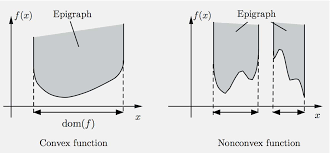

Introduction to Numerical Optimization
Advanced Statistical Computing
Joong-Ho Won
Seoul National University
November 2023
Introduction
- Optimization or mathematical programming considers the problem \[
\begin{array}{ll}
\text{minimize} & f(\mathbf{x}) \\
\text{subject to} & \mathbf{x} \in C
\end{array}
\]
- Vector \(\mathbf{x}\) in a vector space \(V\) is the optimization variable.
- In most cases \(V=\mathbb{R}^d\).
- Function \(f: V \to \mathbb{R}\) is the objective function.
- \(C \subset V\) is called the constraint set.
- If \(C = V\), the problem is unconstrained.
- Otherwise it is constrained.
- \(\mathbf{x}^{\star}\) is called a (global) solution if \(f(\mathbf{x}^{\star}) \le f(\mathbf{x})\) for all \(\mathbf{x}\in C\).
- Solution may not be unique (recall the least squares problem).
- Solution may not even exist (e.g., \(f(x)=1/x\), \(C=\{x\in\mathbb{R}: x \ge 0\}\)).
- Possible confusion:
- Statisticians mostly talk about maximization: \(\max \, L(\mathbf{\theta})\).
- Optimizers talk about minimization: \(\min \, f(\mathbf{x})\).
- Why is optimization important in statistics?
- Maximum likelihood estimation (MLE).
- Maximum a posteriori (MAP) estimation in Bayesian framework.
- Machine learning: minimize a loss + certain regularization.
- …
- Global optimization
- Worst-case complexity grows exponentially with the \(d\) and \(n\)
- Even small problems, with a few tens of variables, can take a very long time (e.g., hours or days) to solve.
- Local optimization
- Local solution: \(\mathbf{x}^{\dagger}\) such that \(f(\mathbf{x}^{\dagger}) \le f(\mathbf{x})\) for all \(\mathbf{x}\in C \cap \mathbf{N}(\mathbf{x}^{\dagger})\), where \(\mathbf{N}(\mathbf{x}^{\dagger})\) is a certain neighborhood of \(\mathbf{x}^{\dagger}\).
- Can be found relatively easy, using only local information on \(f\), e.g., gradients.
- Local optimization methods can be fast, can handle large-scale problems, and are widely applicable.
- Our major goal (or learning objectives) is to
- have a working knowledge of some commonly used optimization methods:
- convex programming with emphasis in statistical applications
- Newton-type algorithms
- first-order methods
- expectation-maximization (EM) algorithm
- majorization-minimization (MM) algorithm
- implement some of them in homework
- get to know some optimization tools in Julia
- Problem \[
\begin{array}{ll}
\text{minimize} & f(\mathbf{x}) \\
\text{subject to} & \mathbf{x} \in C
\end{array}
\]
- \(f\) is a convex function \[
f(\alpha\mathbf{x} + (1-\alpha)\mathbf{y}) \le \alpha f(\mathbf{x}) + (1-\alpha) f(\mathbf{y}), \quad \forall\mathbf{x}, \mathbf{y} \in \text{dom}f, \forall\alpha \in [0, 1].
\]
- \(C\) is a convex set \[
\mathbf{x}, \mathbf{y} \in C \implies \alpha\mathbf{x} + (1-\alpha)\mathbf{y} \in C, \quad \forall\alpha \in [0, 1].
\]
- More familiar formulation: take \(V=\mathbb{R}^d\), \[
\begin{array}{ll}
\text{minimize} & f_0(\mathbf{x}) \\
\text{subject to} & f_i(\mathbf{x}) \le b_i, \quad i=1, 2, \dotsc, m.
\end{array}
\] where \(f_i: \mathbb{R}^d \to \mathbb{R}\) are convex functions.
- Equality constraint: \(f_i(\mathbf{x})=b_i \iff f_i(\mathbf{x}) \le b_i\) and \(-f_i(\mathbf{x}) \le -b_i\)
- Hence only linear equality constraints \(\mathbf{A}\mathbf{x}=\mathbf{b}\) are allowed (why?)
- Why do we care about convex optimization?
Fact. Any local solution of a convex optimization problem is a global solution.
- Role of convex optimization
- Initialization for local optimization
- Convex heuristics for nonconvex optimization
- Bounds for global optimization
Convex sets
The underlying space is a vector space \(V\) unless otherwise stated.
Line segments: for given \(\mathbf{x}\), \(\mathbf{y}\), \(\{\alpha \mathbf{x} + (1-\alpha)\mathbf{y}: 0 \le \alpha \le 1\}\).
A set \(C\) is convex if for every pair of points \(\mathbf{x}\) and \(\mathbf{y}\) lying in \(C\) the entire line segment connecting them also lies in \(C\).

Examples of convex sets
Singleton: \(\{\mathbf{a}\}\).
Euclidean space \(\mathbb{R}^d\).
Norm ball: \(B_r(\mathbf{c})=\{\mathbf{x}: \|\mathbf{x}-\mathbf{c}\| \le r\}\) for any proper norm \(\|\cdot\|\).

\(\ell_p\) “norm” \(\|\mathbf{x}\|_p = (\sum_{i=1}^d |x_i|^p)^{1/p}\), \(0<p<1\), in \(\mathbb{R}^d\) is not a proper norm.
Hyperplane: \(\{\mathbf{x}: \langle \mathbf{a}, \mathbf{x} \rangle = c \}\).
Halfspace: \(\{\mathbf{x}: \langle \mathbf{a}, \mathbf{x} \rangle \le c \}\) or \(\{\mathbf{x}: \langle \mathbf{a}, \mathbf{x} \rangle < c \}\).
Polyhedron: \(\{\mathbf{x}: \langle \mathbf{a}_j, \mathbf{x} \rangle \le b_j,~j=1,\dots,m\} = \{\mathbf{x}: \mathbf{A}\mathbf{x} \le \mathbf{b}\}\).
Positive semidefinite cone \(\mathbb{S}^d_{+}=\{\mathbf{X}\in\mathbb{R}^{d\times d}: \mathbf{X} = \mathbf{X}^T, ~\mathbf{X} \succeq \mathbf{0} \}\) and set of positive definite matrices \(\mathbb{S}^d_{++}=\{\mathbf{X}\in\mathbb{R}^{d\times d}: \mathbf{X}=\mathbf{X}^T, ~\mathbf{X} \succ \mathbf{0} \}\). (What is \(V\)?)
Translation: \(C + \mathbf{a} = \{\mathbf{x} + \mathbf{a}: \mathbf{x}\in C\}\) if \(C\) is convex.
Minkowski sum: \(C + D=\{\mathbf{x}+\mathbf{y}: \mathbf{x}\in C, \mathbf{y}\in D\}\) if \(C\) and \(D\) are convex.
Cartesian product: \(C\times D=\{(\mathbf{x},\mathbf{y}): \mathbf{x}\in C, \mathbf{y}\in D\}\) if \(C\) and \(D\) are convex.
Image \(\mathcal{A}C\) of a convex set \(C\) under a linear map \(\mathcal{A}\).
Inverse image \(\mathcal{A}^{-1}C\) of a convex set \(C\) under a linear map \(\mathcal{A}\).
Convex cones
- A set \(C\) is a cone if for each \(\mathbf{x}\) in \(C\), the set \(\{\alpha\mathbf{x}: \alpha > 0\} \subset C\).
- Some authors (e.g., Boyd & Vandenberghe) use instead \(\{\alpha\mathbf{x}: \alpha \ge 0\}\) to include the origin.
- Is \(\mathbb{S}_{++}^d\) a cone?
- A cone is unbounded.
- A cone \(C\) is a convex cone if it is also convex. Equivalently, a set \(C\) is a convex cone if for any \(\mathbf{x}, \mathbf{y}\in C\), \(\{\alpha\mathbf{x} + \beta\mathbf{y}: \alpha, \beta > 0\} \subset C\).
Examples of convex cones
Any subspace
Any hyperplane passing the origin.
Any halfspace whose closure passes the origin.
\(\mathbb{S}_{+}^d\), set of positive semidefinite matrices.
Second-order cone (Lorentz cone): \(\{(\mathbf{x}, t): \|\mathbf{x}\|_2 \le t \}\).

Norm cone: \(\{(\mathbf{x}, t): \|\mathbf{x}\| \le t \}\), where \(\|\cdot\|\) is any norm.
- Example of a nonconvex cone?
Affine sets
- A set \(C\) is a affine if for each \(\mathbf{x}, \mathbf{y}\) in \(C\), the whole line \(\{\alpha\mathbf{x}+(1-\alpha)\mathbf{y}: \alpha \text{ is a scalar} \} \subset C\).
- Convex.
- \(C = \mathbf{c} + S\) for some \(\mathbf{c}\in V\) and subspace \(S\).
- We define \(\text{dim}C = \text{dim}S\).
- Example
- Any singleton.
- Any subspace.
- Set of solutions of a linear system of equations: \(\{\mathbf{x}: \mathbf{A}\mathbf{x}=\mathbf{b}\}\).
- In fact any affine set can be represented by the solution set of a linear system.
The intersection of an arbitrary collection of convex, affine, or conical sets is convex, affine, conical, respectively.
Generators
Convex combination: \(\{\sum_{i=1}^m \alpha_i \mathbf{x}_i: \alpha_i \ge 0, ~\sum_{i=1}^m\alpha_i = 1\}\)
Convex sets are closed under convex combination: any convex combination of points from a convex set \(C\) belongs to \(C\)
Conic combination, affine conbination are defined similarly; similar closure properties also hold.
Convex hull
The convex hull of a nonempty set \(C\) is the set of all convex combinations of points in \(C\):
\[
\text{conv}C = \{\sum_{i=1}^m \alpha_i \mathbf{x}_i: \mathbf{x}_i\in C,~ \alpha_i \ge 0, i=1,\dotsc,m \text{ for some }m,~\sum_{i=1}^m\alpha_i = 1 \}
\] which is the smallest convex set containing \(C\).

Affine dimension
\(\text{dim}(C) \triangleq \text{dim}(\text{aff}C)\).
- Example: simplex \[
S = \text{conv}\{\mathbf{v}_0, \mathbf{v}_1, \dotsc, \mathbf{v}_k\}
\] when \(\mathbf{v}_0, \mathbf{v}_1, \dotsc, \mathbf{v}_k\) are affinely independent, i.e., \(\mathbf{v}_1-\mathbf{v}_0, \dotsc, \mathbf{v}_k-\mathbf{v}_0\) are linearly independent.
- \(\dim(S) = k\)
- Unit simplex in \(\mathbb{R}^d\): \(\text{conv}\{\mathbf{0}, \mathbf{e}_1, \dots, \mathbf{e}_d\} = \{\mathbf{x}\in\mathbb{R}^d: \mathbf{x} \ge \mathbf{0}, ~ \mathbf{1}^T\mathbf{x} \le 1 \}\).
- Probability simplex in \(\mathbb{R}^d\): \(\Delta_{d-1} = \text{conv}\{\mathbf{e}_1, \dots, \mathbf{e}_d\} = \{\mathbf{x}\in\mathbb{R}^d: \mathbf{x} \ge \mathbf{0}, ~ \mathbf{1}^T\mathbf{x} = 1 \}\).
Relative interior
Most constraint sets in optimization does not have an interior, e.g, probability simplex. It is useful to define the interior relative to the affine hull: \[
\text{relint}C = \{\mathbf{x}\in C: (\exists r>0) B(\mathbf{x}, r) \cap \text{aff}C \subset C \}
\]
- What is the relative interior of the probability simplex in \(\mathbb{R}^3\)?
Convex functions
Recall that a real-valued function \(f\) is convex if \[
f(\alpha\mathbf{x} + (1-\alpha)\mathbf{y}) \le \alpha f(\mathbf{x}) + (1-\alpha) f(\mathbf{y}), \quad \forall\mathbf{x}, \mathbf{y} \in \text{dom}f, \forall\alpha \in [0, 1],
\]
- If the inequality is strict for all \(\alpha \in (0,1)\), then \(f\) is strictly convex.
- \(f\) is concave if \(-f\) is convex.
Extended-value functions: it is often convenient to extend the domain of \(f\) to the whole \(V\) and allow to have the value \(\infty\). Then \(f:V \to \mathbb{R}\cup\{\infty\}\) and \[
\text{dom} f = \{\mathbf{x}: f(\mathbf{x}) < \infty \}
\] is the essential domain of \(f\).
This extension allows us to consider the indicator function of a set: \[
\iota_C(\mathbf{x}) = \begin{cases} 0 & \mathbf{x} \in C \\ \infty & \mathbf{x} \notin C \end{cases}
\] so that a constrained optimization problem is converted to an unconstrained problem: \[
\min_{\mathbf{x}\in C} f(\mathbf{x}) = \min_{\mathbf{x}} f(\mathbf{x}) + \iota_C(\mathbf{x})
\]
Properness: a function \(f\) is proper if \(\text{dom}f \neq \emptyset\) and \(f(\mathbf{x}) > -\infty\) for all \(\mathbf{x}\).
Examples
- Any affine function (also concave).
- Any norm
- Indicator function of a nonempty convex set.
- Exponential: \(f(x)=e^{ax}\).
- Powers: \(f(x)=x^\alpha\) on \(\mathbb{R}_{++}=\{x\in\mathbb{R}: x>0\}\). Convex if \(\alpha\ge 1\), concave if \(\alpha\in[0,1]\).
- Powers of absolute values: \(f(x)=|x|^p\) on \(\mathbb{R}\), if \(p \ge 1\).
- Logarithm: \(f(x)=\log x\) is concave in \(\text{dom}f = \mathbb{R}_{++}\).
- Quadratic-over-linear function \(f(x,y) = x^2/y\) with \(\text{dom}f = \mathbb{R}\times\mathbb{R}_{++} = \{(x,y): x\in\mathbb{R}, y > 0\}\).
- Maximum: \(f(\mathbf{x}) = \max\{x_1,\dotsc,x_d\}\).
- Log-sum-exp: \(f(\mathbf{x}) = \log(e^{x_1}+\dotsb+e^{x_d})\), a smoothed version of \(\max\{x_1,\dotsc,x_d\}\).
- Geometric mean: \(f(\mathbf{x}) = \prod_{i=1}^d x_i^{1/d}\) is concave, with \(\text{dom}f=\mathbb{R}_{++}^d\).
- Log-determinent: \(f(\mathbf{X}) = \log\det\mathbf{X}\) is concave in \(\text{dom}f = \mathbb{S}_{++}^d\).
Jensen’s inequality
- Function \(f\) is convex if and only if \[
f(\sum_{i=1}^m\alpha_i\mathbf{x}_i) \le \sum_{i=1}^m\alpha_i f(\mathbf{x}_i), \quad \forall \mathbf{x}_1, \dotsc, \mathbf{x}_m, ~\forall\alpha_i \ge 0, ~ \sum_{i=1}^m \alpha_i=1.
\]
First-order condition
A.k.a. supporting hyperplane inequality
If \(f\) is differentiable (i.e., its gradient \(\nabla f\) exists at each point in \(\text{dom}f\), which is open), then \(f\) is convex if and only if \(\text{dom} f\) is convex and \[
f(\mathbf{y}) \ge f(\mathbf{x}) + \langle \nabla f(\mathbf{x}), \mathbf{y}-\mathbf{x} \rangle
\] for all \(\mathbf{x}, \mathbf{y} \in \text{dom}f\).
- \(f\) is strictly convex if and only if strict inequality holds for all \(\mathbf{y} \neq \mathbf{x}\).

Second-order condition
- If \(f\) is twice differentiable (i.e., its Hessian \(\nabla^2 f\) exists at each point in \(\text{dom}f\), which is open), then \(f\) is convex if and only if \(\text{dom} f\) is convex and its Hessian is positive semidefinite:, i.e, \[
\nabla^2 f(\mathbf{x}) \succeq \mathbf{0} \quad \forall\mathbf{x} \in \text{dom} f.
\]
- If \(\nabla^2 f(\mathbf{x}) \succ \mathbf{0}\), then \(f\) is strictly convex.
Epigraph
The epigraph of a function \(f\) is the set \[
\text{epi}f = \{(\mathbf{x}, t): \mathbf{x}\in\text{dom}f,~ f(\mathbf{x}) \le t \}.
\]
A function \(f\) is convex if and only if \(\text{epi}f\) is convex.

If \((\mathbf{y}, t)\in\text{epi}f\), then from the supporting hyperplance inequality, \[
t \ge f(\mathbf{y}) \ge f(\mathbf{x}) + \langle \nabla f(\mathbf{x}), \mathbf{y} - \mathbf{x} \rangle
\] or \[
\left\langle (\nabla f(\mathbf{x}), -1), (\mathbf{y}, t) - (\mathbf{x}, f(\mathbf{x})) \right\rangle \le 0.
\] This means that the hyperplane defined by \((\nabla f(\mathbf{x}),−1)\) supports \(\text{epi}f\) at the boundary point \((\mathbf{x},f(\mathbf{x}))\):

An extended-value function \(f\) is called closed if \(\text{epi}f\) is closed.
Separating hyperplane theorem
Let \(A\) and \(B\) be two disjoint nonempty convex subsets of \(\mathbb{R}^n\). Then there exist a nonzero vector \(\mathbf{v}\) and a real number \(c\) such that \[
\mathbf{a}^T\mathbf{v} \le c \le \mathbf{b}^T\mathbf{v},
\quad
\forall\mathbf{a} \in A,~
\forall\mathbf{b} \in B
.
\] That is, the hyperplane \(\{\mathbf{x}\in\mathbb{R}^n: \mathbf{x}^T\mathbf{v} = c\}\) normal to \(\mathbf{v}\) separates \(A\) and \(B\).
If in addition both \(A\) and \(B\) are closed and one of them is bounded, then the separation is strict, i.e., there exist a nonzero vector \(\mathbf{v}\) and real numbers \(c_1\) and \(c_2\) such that \[
\mathbf{a}^T\mathbf{v} < c_1 < c_2 < \mathbf{b}^T\mathbf{v},
\quad
\forall\mathbf{a} \in A,~
\forall\mathbf{b} \in B
.
\]
Thus there exists a hyperplane that strictly separates \((y, \zeta)\) and \(\text{epi}\varphi\) in the above plot if \(\varphi\) is closed. (why?)
Sublevel sets
\(\alpha\)-sublevel set of an extended-value function \(f\) is \[
S_{\alpha} = \{\mathbf{x}\in\text{dom}f : f(\mathbf{x}) \le \alpha \}.
\]
If \(f\) is convex, then \(S_{\alpha}\) is convex for all \(\alpha\).
- Converse is not true: \(f(x)=-e^{x}\).
Further if \(f\) is continuous, then all sublevel sets are closed.
Operations that preserve convexity
(Nonnegative weighted sums) If \(f\) and \(g\) are convex and \(\alpha\) and \(\beta\) are nonnegative constants, then \(\alpha f + \beta g\) is convex, with \(\text{dom}f \cap \text{dom}g\).
- Extension: If \(f(\mathbf{x},\mathbf{y})\) is convex in \(\mathbf{x}\) for each fixed \(\mathbf{y} \in \mathcal{A}\), and \(w(\mathbf{y})\ge 0\) for all \(y\in\mathcal{A}\), then the integral \(g(\mathbf{x}) = \int_{\mathcal{A}} w(\mathbf{y})f(\mathbf{x},\mathbf{y})d\mathbf{y}\) is convex provided the integral exists.
(Composition with affine mapping) If \(f\) is convex, then composition \(f(\mathbf{A}\mathbf{x} + \mathbf{b})\) of \(f\) with an affine map \(\mathbf{x}\mapsto \mathbf{A}\mathbf{x} + \mathbf{b}\) is convex, with \(\text{dom}g=\{\mathbf{x}:\mathbf{Ax}+\mathbf{b}\in\text{dom}f\}\).
(Pointwise maximum and supremum) If \(f_i\) is convex for each fixed \(i=1,\dotsc,m\), then \(g(\mathbf{x}) = \max_{i=1,\dotsc,m} f_i(\mathbf{x})\) is convex, with \(\text{dom}g = \cap_{i=1}^m\text{dom}f_i\).
- Extension: If \(f(\mathbf{x},\mathbf{y})\) is convex in \(x\), then \(g(\mathbf{x}) = \sup_{\mathbf{y}\in\mathcal{A}}f(\mathbf{x},\mathbf{y})\) is convex, with \(\text{dom}g=\{\mathbf{x}:(\forall\mathbf{y}\in\mathcal{A})(\mathbf{x},\mathbf{y})\in\text{dom}f, \sup_{\mathbf{y}\in\mathcal{A}} f(\mathbf{x},\mathbf{y})<\infty\}\).
(Composition) For \(h:\mathbb{R}\to\mathbb{R}\cup\{\infty\}\) and \(g:V\to\mathbb{R}\cup\{\infty\}\), if \(h\) is convex and nondecreasing, and \(g\) is convex, then \(f = h \circ g\) is convex, with \(\text{dom}f = \{\mathbf{x}\in\text{dom}g: g(\mathbf{x})\in\text{dom}h\}\).
(Paritial minimization) If \(f(\mathbf{x},\mathbf{y})\) is jointly convex in \((\mathbf{x},\mathbf{y})\), then \(g(\mathbf{x}) = \inf_{\mathbf{y}\in C} f(\mathbf{x},\mathbf{y})\) is convex provided it is proper and \(C\) is nonempty convex, with \(\text{dom}f = \{\mathbf{x}: (\exists\mathbf{y}\in C)(\mathbf{x},\mathbf{y})\in\text{dom}f\}\) (projection).
(Perspective) If \(f(\mathbf{x})\) is convex and finite, then its perspective \(g(\mathbf{x}, t)=t f(t^{-1}\mathbf{x})\) is convex, with \(\text{dom}g=\{(\mathbf{x},t): t^{-1}\mathbf{x}\in\text{dom}f,~ t>0\}\).
Examples
A sum of convex functions is convex.
\(f(\mathbf{x})=x_{(1)}+x_{(2)}+\dotsb+x_{(k)}\), the some of \(k\) largest components of \(\mathbf{x}\in\mathbb{R}^d\), is convex, because \[
f(\mathbf{x})=\max\{x_{i_1} +\dotsb + x_{i_k} : 1\le i_1 <i_2 < \dotsb < i_k \le n\}.
\]
Maximum eigenvalue of a symmetric matrix \(\lambda_{\max}: \mathbb{S}^d \to \mathbb{R}\) is convex, because \[
\lambda_{\max}(\mathbf{X}) = \max_{\mathbf{v}^T\mathbf{v}=1} \mathbf{v}^T\mathbf{X}\mathbf{v}.
\] (Rayleigh quotient). The maximand is linear (hence convex) in \(\mathbf{X}\) for each \(\mathbf{v}\).
- Minimum eigenvalue of a symmetric matrix is concave.
Sum of \(k\) largest eigenvalues of a symmetric matrix is convex, because \[
\sum_{i=1}^k\lambda_{i}(\mathbf{X}) = \max_{\mathbf{V}^T\mathbf{V}=\mathbf{I}_k, \mathbf{V}\in\mathbb{R}^{d\times k}} \text{tr}(\mathbf{V}^T\mathbf{X}\mathbf{V})
\] (Ky Fan, 1949).
Support function of a set: \(\sigma_C(\mathbf{x}) = \sup_{\mathbf{y}\in C} \langle \mathbf{x}, \mathbf{y} \rangle\) is convex (with an obvious domain), because \(\langle \mathbf{x}, \mathbf{y} \rangle\) is convex (linear) in \(\mathbf{x}\) for each \(\mathbf{y}\in C\).
- Ex) dual norm: \(\|\mathbf{x}\|_* = \sup_{\|\mathbf{y}\| \le 1} \langle \mathbf{x}, \mathbf{y} \rangle = \sigma_C(\mathbf{x})\), where \(C=\{\mathbf{y}: \|\mathbf{y}\| \le 1\}\) is a norm ball.
- Hence \(\ell_p\) norm is a support function of the unit \(\ell_q\) norm ball, \(1/p+1/q=1\).
Matrix perspective function \(f(\mathbf{x},\mathbf{Y}) = \mathbf{x}^T\mathbf{Y}^{-1}\mathbf{x}\) is convex with \(\text{dom}f=\mathbb{R}^d\times\mathbb{S}_{++}^d\) because \[
\mathbf{x}^T\mathbf{Y}^{-1}\mathbf{x} = \sup_{\mathbf{z}\in\mathbb{R}^d}\{2\mathbf{x}^T\mathbf{z} - \mathbf{z}^T\mathbf{Y}\mathbf{z}\}.
\]
Kullback-Leibler divergence of two \(d\)-dimensional probability vectors \[
D(\mathbf{x} || \mathbf{y}) = \sum_{i=1}^d x_i\log(x_i/y_i)
\] (taking \(0\log 0= 0\) and \(\log 0=\infty\) by continuity) is convex on \(\Delta_{d-1}\times\Delta_{d-1}\), because
- \(g(x, t)=t\log (t/x)\) is convex since it is the perspective of \(f(x)=-\log x\);
- \(\tilde{D}(\mathbf{x}, \mathbf{y}) = \sum_{i=1}^d (x_i\log(x_i/y_i) - x_i + y_i)\) is convex on \(\mathbb{R}_{+}^d\times \mathbb{R}_{+}^d\);
- \(D(\mathbf{x} || \mathbf{y}) = \tilde{D}(\mathbf{x}, \mathbf{y}) + \iota_{\Delta_{d-1}}(\mathbf{x}) + \iota_{\Delta_{d-1}}(\mathbf{y})\).